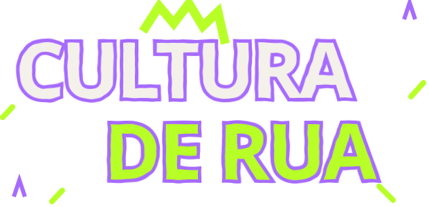

ARTE URBANA
SPRAY
THE
STREETS
01 / 04THE
STREETS
A cidade também é uma tela.
Muros, cores e ideias que transformam o jeito de olhar para o caminho de todo dia.
EXPLORAR CULTURA ↗
A CULTURA NÃO PEDE LICENÇA
Um espaço para encontrar, descobrir e fortalecer quem faz a cultura urbana acontecer. Do corre independente aos encontros que movimentam a cidade.
O QUE TÁ ACONTECENDO
A cena se movimenta o tempo todo.
Chega mais e acompanha.
Muros, cores e ideias que transformam o jeito de olhar para o caminho de todo dia.
EXPLORAR CULTURA ↗Encontros, lançamentos e sons que contam de onde a gente vem.
OUVIR A CENA ↗Textos, pensamentos e vozes independentes merecem espaço.
LER E DESCOBRIR ↗PRÉVIA VISUAL · CONTEÚDOS ILUSTRATIVOS, AINDA NÃO SÃO PUBLICAÇÕES REAIS
UM ESPAÇO, MUITAS VOZES
Skate, graffiti, música, moda, poesia, dança, fotografia e tudo que nasce da criatividade de quem faz acontecer. Aqui, cada expressão tem espaço.
CHEGA JUNTO ↗Eventos, encontros e rolês pela cidade.
↗02Marcas, artistas e projetos independentes.
↗03Quem movimenta a cultura perto de você.
↗04Histórias, ideias e referências da cultura urbana.
↗A RUA É FEITA POR QUEM PARTICIPA
Tem um trabalho, evento, coletivo, marca ou ideia que merece circular? O CULTURA DE RUA nasce para conectar essas histórias.
QUERO PARTICIPAR ↗Contato demonstrativo — canal oficial ainda será configurado.